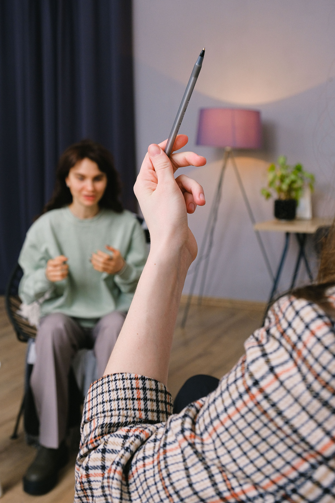
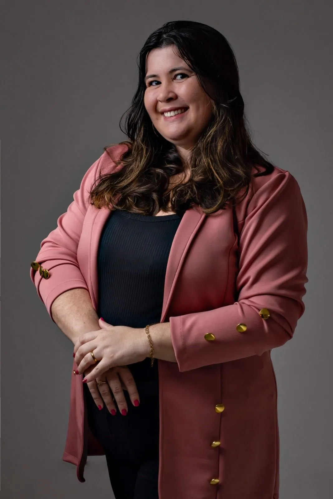
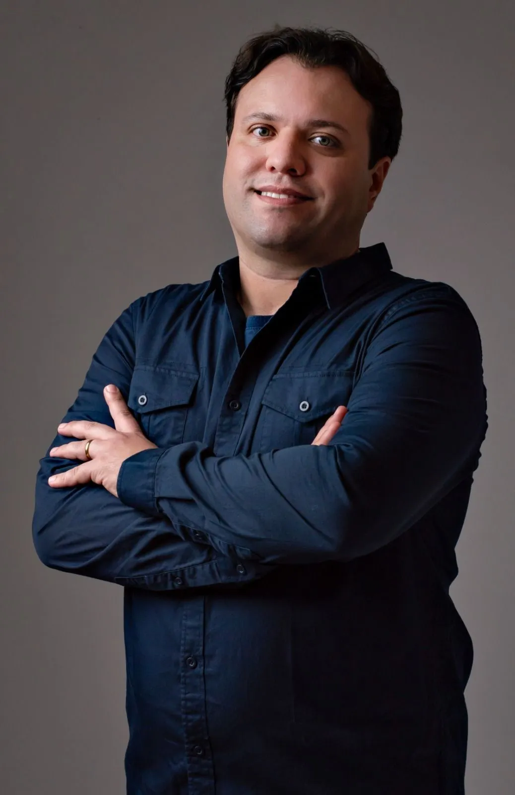
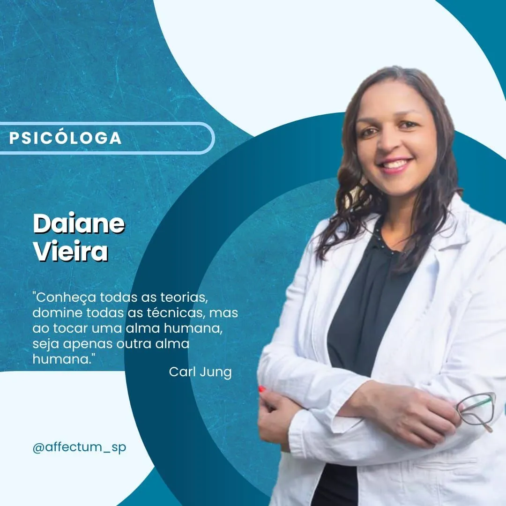
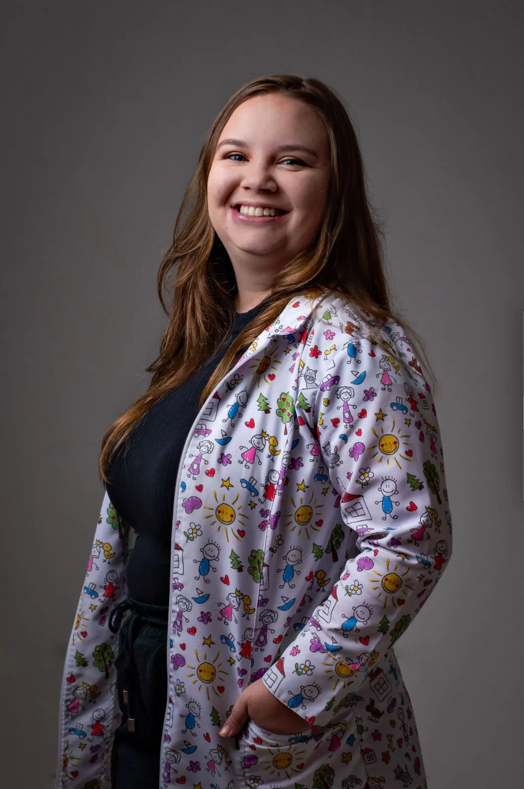

Transformamos histórias, cuidamos de almas e damos voz à sua essência.
Bem-vindos à Clínica Affectum, um espaço de cuidado integral inaugurado em 1 de agosto de 2022. Aqui, acreditamos que a saúde emocional, psicológica e física é para todas as idades. Nossa equipe dedicada está comprometida em ajudar você a alcançar uma vida mais saudável em todos esses aspectos. Seja você uma criança, adulto ou idoso, estamos aqui para apoiá-lo em sua jornada para o bem-estar. Sua saúde é nossa prioridade.


Conheça a psicóloga Kamily, uma terapeuta cognitivo-comportamental com mais de uma década de experiência. Formada desde 2011, ela é apaixonada por auxiliar indivíduos acima de 10 anos a superar obstáculos emocionais. Com opções de atendimento virtual e presencial, Kamily está pronta para ajudar você a trilhar o caminho para uma mente mais saudável e equilibrada. Sua jornada de bem-estar começa agora, com o apoio de uma profissional dedicada e experiente.
Conheça Juliano, nosso psicanalista especializado. Com opções de atendimento tanto virtual quanto presencial, ele está pronto para auxiliar indivíduos com mais de 10 anos de idade a explorar as complexidades da mente. Juliano oferece suporte compassivo e profundo para ajudar você a compreender seus pensamentos e emoções. Sua jornada de autodescoberta começa agora, com um profissional dedicado ao seu lado.


Conheça Daiane, nossa psicóloga experiente. Formada em 2011, ela está aqui para oferecer suporte emocional e ajuda no seu bem-estar. Com a flexibilidade do atendimento virtual e presencial, Daiane está pronta para ajudar você a encontrar equilíbrio e clareza em sua vida. Sua jornada para uma mente mais saudável começa com o apoio de uma profissional comprometida.
Com mais de 15 anos de formação e experiência, minha abordagem terapêutica é pautada no cuidado, respeito e na compreensão de suas questões de forma única e acolhedora. Ao longo de minha carreira, tive a oportunidade de acompanhar diversas pessoas em suas jornadas de autodescoberta, oferecendo um espaço seguro onde você pode explorar suas emoções, seus pensamentos e seus comportamentos, sempre com confidencialidade e ética.

Conheça Flavia Molina, uma fonoaudióloga apaixonada pelo desenvolvimento infantil. Sua missão é auxiliar crianças e adolescentes a alcançar uma comunicação eficaz. Com vasta experiência e dedicação, Flavia oferece suporte especializado para que os jovens possam superar desafios na fala, linguagem e comunicação, capacitando-os a se expressarem de maneira clara e confiante. Seu compromisso com o bem-estar e crescimento das crianças a torna uma aliada valiosa no desenvolvimento das habilidades de comunicação de seus pacientes jovens.
Conheça Silvana, uma fotógrafa especializada em gestantes e crianças, com um olhar único para capturar a essência dos momentos mais especiais da sua vida. Com um ambiente acolhedor e cheio de carinho, ela transforma cada sorriso, cada gestação e cada fase da infância em lembranças cheias de afeto e autenticidade. Com sensibilidade e dedicação, cria imagens que vão além de simples fotos — elas se tornam verdadeiras memórias para toda a vida.